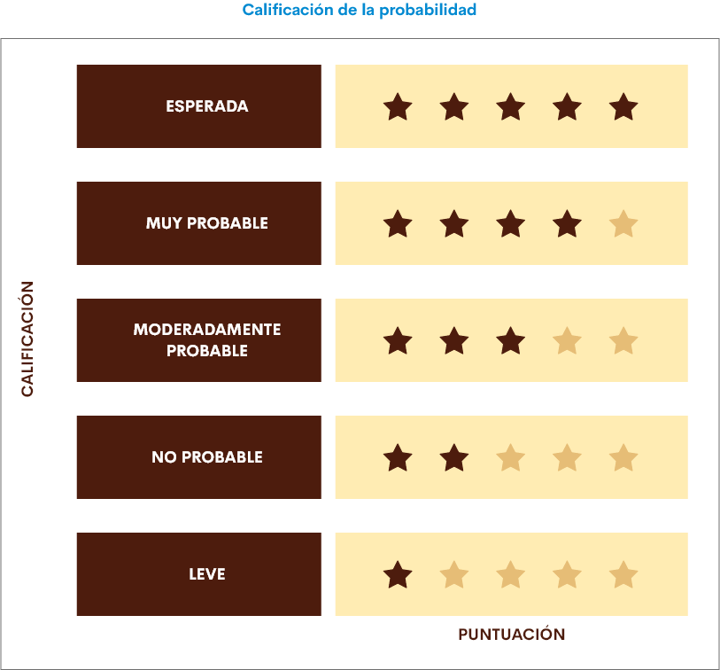
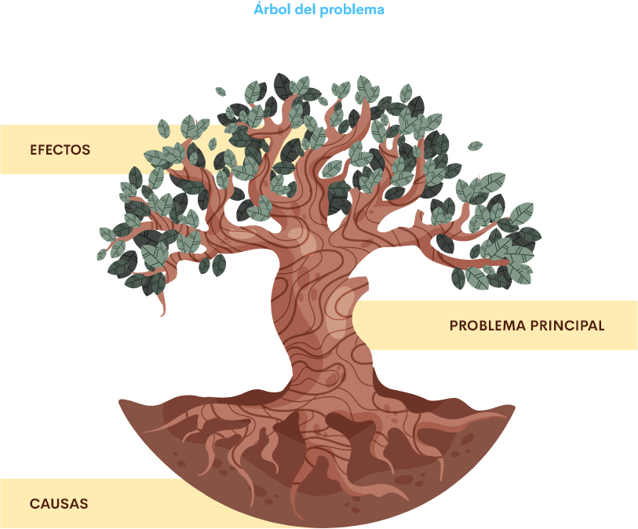
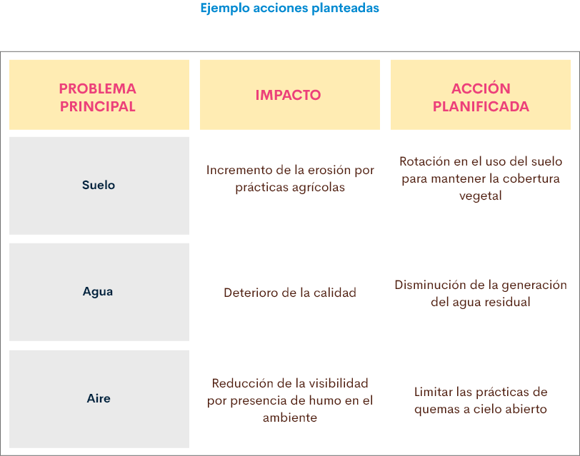

1. Introducción
La principal problemática que se presenta en las intervenciones con las comunidades étnicas es la falta de concertación de las acciones que se van a implementar en sus territorios, razón por la cual muchos de los proyectos o actividades que se desarrollan en pro de mejorar las condiciones de vida no llegan a generar el impacto esperado. Para lograr resultados positivos se hace necesario identificar los recursos que existen en los territorios y no alterar en ninguna instancia el estado en el que se encuentran, para ello se deben llevar a cabo técnicas que permitan la construcción de diálogos, resolución de conflictos y negociación de acciones a priorizar y ejecutar en el contexto socio ambiental.
Las diferentes acciones a planificar deben contemplar medidas que permitan prevenir, mitigar, corregir o compensar los impactos causados por los riesgos socio ambientales producto de las actividades propias de la comunidad o de proyectos desarrollados en la zona. El presente componente permite dar a conocer los tipos de conflictos en los que se pueden llegar a involucrar las comunidades étnicas y las técnicas de negociación para concertar pacíficamente; las herramientas para la identificación y priorización de riesgos e impactos que involucran aspectos socio ambientales de los territorios; la ruta para la construcción de un plan de acción que permita planificar y monitorear las acciones socio ambientales concertadas con la comunidad étnica.
1. Intervención en comunidades étnicas
Las comunidades étnicas presentan un estilo de vida propio apoyado en un modelo de gobierno autónomo, normas, valores y prácticas culturales en defensa de la vida, el territorio y la biodiversidad. Parte importante de la comunidad es mantener la unidad, y trabajar colectivamente, defendiendo sus derechos. Las actividades que se adelanten en comunidades étnicas, parten de la construcción de propuestas concertadas entre los actores involucrados, que permitan crear vínculos afectivos y socio comunitarios útiles, para lograr identificar sus problemáticas y construir sus posibles soluciones.
La intervención comunitaria en comunidades propias, requiere de un enfoque diferencial étnico, enfatizando el reconocimiento especial de las poblaciones étnicas en Colombia, bajo los principios del respeto de los derechos colectivos e integrales de los pueblos con características históricas y culturales comunes y al fortalecimiento de su organización social propia.
1.1 Diálogo y negociación de conflictos
El diálogo es una herramienta que recoge información pertinente, de manera rápida en un grupo permitiendo obtener información de primera mano con actores directamente involucrados sobre algún tema en particular. Esta herramienta hace que la gente se exprese sobre lo que conoce, piensa y cree, en donde una persona (actor externo) obtiene información sobre algo, conversando, interrogando a otra persona (actor interno).
En el Plan Nacional de Desarrollo (2018 - 2022 Pacto por Colombia - Pacto por la Equidad), se reconoce la necesidad de instalar procesos de diálogo social, que consisten en promover escenarios que generen confianza y entendimiento mutuo entre las partes, convirtiéndose en una estrategia pertinente para atender las diferencias y conflictividades culturales étnicas y poblacionales con un enfoque de consenso razonado, propio de la deliberación dialógica y no violenta.

El conflicto se presenta cuando ante una situación (social, familiar, laboral, de pareja, personal o comunitaria), los actores involucrados tienen distintos intereses, deseos, o puntos de vista, de acuerdo a una conveniencia diferente en relación con tomar una u otra decisión. Los conflictos se generan dentro de las relaciones humanas, en cualquier contexto, debido a diversas causas, que pueden ser: por falta de comunicación, búsqueda de poder, liderazgos inadecuados, cambios entre las estructuras y dinámicas en las relaciones, desconfianza o insatisfacción, competencia de recursos y límites ambiguos, generando sentimientos asociados a (rabia, pena, dolor, humillación), lo que finalmente ocurre es que el conflicto estalla y se manifiesta de la peor manera, generando conductas violentas, manifestaciones, mitin, que al final no solucionan el problema de fondo.
A nivel étnico el Ministerio del Interior a través de la dirección de asuntos indígenas, ROM, y minorías ha constatado el incremento de desacuerdos, siendo los más recurrentes los conflictos sociales, comunitarios o familiares, en donde los pueblos indígenas culturalmente han desarrollado y conservado varias concepciones y mecanismos para su manejo.
Se pueden establecer tres tipos de conflictos étnicos:

1.2 Técnicas de diálogo, resolución de conflictos y negociación con comunidades étnicas
El diálogo facilita la participación de todos los actores involucrados en un asunto en particular, en donde las decisiones que se tomen beneficien o afecten algún miembro de los sectores interesados, las técnicas de diálogo son aquellos elementos que permiten integrar organizaciones y comunidades en un todo, permitiendo la creación de espacios de todos los grupos de interés; facilitando la construcción de su propia realidad colectiva.
Técnicas de diálogo.

Diálogo de saberes: presenta una utilidad social del conocimiento, o la relación intrínseca entre conocimiento y acción. El diálogo de saberes ancestrales con la sociedad, permite la creación de nuevo conocimiento que conlleva a otras maneras de actuar.
Según Gómez et al. (2015) Este no consiste en un intercambio de conversaciones para demostrar quién sabe más sobre un tema, sino que es una propuesta humanista, que permite compartir lo que sabemos en busca de ser mejores seres humanos y edificar sociedades más justas. Por eso, el diálogo de saberes cumple el papel de controlar los excesos de la ciencia y los radicalismos del saber popular.
En cuanto a los instrumentos utilizados para el diálogo de saberes, se resaltan los procesos organizativos y ceremoniales, los cuales son de carácter natural y colectivo que permiten la pervivencia y el fortalecimiento cultural de las comunidades étnicas. En este orden de ideas las mingas indígenas, las urambas africanas, los convites campesinos, las organizaciones propias, las conmemoraciones, fiestas y rituales, organizados por las comunidades, facilitan el diálogo de saberes. Se hace importante destacar que las prácticas ancestrales como la medicina propia, la gastronomía, las labores agrícolas y la transmisión de conocimientos por medio de expresiones político-organizativas, por parte de sus sabedores, son elementos básicos para el intercambio de saberes de una comunidad a otra fortaleciéndose culturalmente a través de la palabra.
Diálogo semi-estructurado: permite recoger información general o específica con individuos claves (gobernadores, sabedores, representantes de la comunidad) o con grupos de familias representativas de las comunidades, haciendo una conversación fluida, evitando los cuestionarios formales con temas cerrados. Es importante tomar notas durante el diálogo, y reunirse al final de las jornadas para analizar los resultados, por ejemplo, comparando la información con otras fuentes (otras entrevistas), este proceso se denomina triangulación; es una manera rápida que ayuda a preparar ejercicios de grupo con la comunidad antes de la intervención.
Lluvia de ideas: posibilita en muy corto tiempo intercambiar ideas a partir de palabras generadoras, este método se basa en la plática, la cual debe ser ordenada, sistemática, y finalmente después de compartir, concluye en el consenso acerca de los principales problemas de la comunidad. Se puede iniciar partiendo de una idea la cual se puede ir enriqueciendo y aprobando en una reunión, que cuente con el liderazgo de la comunidad o con personas que tengan algún conocimiento.
Técnicas de resolución de conflictos.
Negociación: es una de las mejores estrategias para resolver conflictos, se caracteriza por ser voluntaria, mueve a cada individuo, busca una forma de eliminar los problemas y buscar paz, desde el interior. Ello implica que las partes se sienten a dar respuesta a las preguntas ¿por qué se generó el conflicto?, ¿cómo encontrar alternativas de solución? Buscando satisfacer a ambas partes permitiendo el acuerdo, arreglo o solución de la situación en cuestión.
Mediación: implica la intervención de una tercera parte, con una característica relevante, ¿cuál es? hacer uso del valor de la neutralidad y la prudencia e imparcialidad, el cual desempeña un rol de asistencia a las partes basado en la comunicación efectiva en el estudio del conflicto y el encuentro de una solución amigable y beneficiosa para todos. El mediador o mediadora debe caracterizarse por no tener intereses o vínculos, ello genera confianza y legitima su actuar entre todos los actores involucrados.
Otra característica del mediador es que este no tiene capacidad de votar o decidir, limitando su actuación a ser un guía, orientador, lo cual, permite la definición del problema y de los intereses exclusivos, la comprensión de los puntos de vista en contraposición y la contribución en el arreglo final para que pueda ser aceptado por los actores.
Arbitraje: se caracteriza por que se involucra una tercera persona neutral en la resolución del conflicto la cual escucha a las partes involucradas para luego emitir el juicio que considere pertinente y justo. El involucrado actúa de manera independiente y tiene la capacidad de decidir y definir la ruta para el acuerdo.
Técnicas de negociación con comunidades étnicas.
Hacer acuerdos: los acuerdos deben ser precisos y de fácil alcance. Va a requerir de tiempo, para llegar a construir conocimiento, comprensión y respeto; se ha establecido que las negociaciones pueden llegar a durar hasta cinco años como mínimo. En el preacuerdo se debe discutir acerca de los intereses, planes, riesgos y oportunidades de las instituciones, también deben explicarse y entenderse con la plena participación de la comunidad.
Los objetivos a largo plazo deberán fijarse desde un inicio y debe quedar claro de cuánto tiempo será el apoyo de las instituciones o actores involucrados, además los arreglos, los activos y las finanzas restantes deben estar establecidos por el acuerdo.
Negociación de buena fe: es indispensable que todas las partes respeten sus procesos en cuanto a la toma de decisiones, valoren sus limitaciones y estén preparadas a participar en la negociación, además de reunirse en los horarios y la frecuencia acordada. Se hace necesario brindar información precisa para la negociación buscando a fondo los problemas más relevantes de la comunidad, para acordar procedimientos de negociación, que entre las partes interesadas queden satisfechas, también se debe discutir el tiempo suficiente para la toma de decisiones con el fin de adquirir compromisos de manera formal, de igual forma se documenta dicha negociación.
Concertación: concertar se traduce en ponerse de acuerdo en busca de soluciones comunes y definir una ruta. Es un ejercicio activo para responder a unos requerimientos por parte de la comunidad. Esta herramienta se ha trazado como una política pública en la que se tienen en cuenta las reglas establecidas por los participantes para organizar sus relaciones.

En la concertación se resalta la inclusión de todas las modalidades de expresión cultural y, sobre todo, le da importancia a los procesos organizacionales que se viven a lo largo del país, permitiendo la formación, gestión, investigación y la apropiación social de la cultura.

Tiene en cuenta múltiples ámbitos geográficos y niveles de influencia, logrando la sensibilización de los integrantes de una comunidad y permitiendo identificar la problemática en temas que inciden en su vida comunitaria y cultural. Este proceso ofrece insumos fundamentales para que se desarrollen las capacidades de análisis y acción de las instituciones y las organizaciones locales, regionales y nacionales, logrando un intercambio de experiencias que contribuyen en la resolución de un conflicto.
2. Planificación acciones socio ambientales
La planificación de acciones socio ambientales en una comunidad étnica se desarrolla después de haber realizado la valoración ambiental y social, identificando las problemáticas ambientales, el estado en el que se encuentran los recursos y la dinámica de las interacciones de la comunidad con el medio ambiente. Las acciones a planificar deben contemplar medidas para prevenir, mitigar, corregir o compensar las afectaciones como también un proceso de monitoreo y seguimiento con los habitantes de la comunidad.
Al momento de proyectar acciones socio ambientales con comunidades étnicas se hace previamente la identificación de las actividades susceptibles a producir impactos, los riesgos asociados a estas actividades y el impacto ambiental que se llegará a provocar en caso de ocurrir el riesgo.
Acciones susceptibles de producir impacto- ASPI
Las ASPI se analizan de forma detallada con la comunidad quienes son los que conocen su territorio y entorno socio ambiental, es importante realizar el análisis de las interacciones de las acciones con los factores ambientales representativos de impacto y determinar en qué medida afectan al entorno.
2.1. Identificación de riesgos e impactos ambientales
Antes de la identificación de los impactos ambientales se deben reconocer las situaciones o actividades que implican peligro a la sociedad y al medio ambiente (riesgos), que representan al entorno con efectos positivos o negativos, que alteran las condiciones normales de la comunidad y que requieren acciones de prevención.
Para la identificación de los riesgos se deben considerar aspectos como: cuáles son los riesgos, el nivel de importancia y el nivel de severidad (alto, moderado, bajo).
¿Cuáles son los riesgos?
Se realiza una descripción de los posibles riesgos que se presentan y que una vez ocurran pueden llegar a generar un impacto. En la identificación de los riesgos se puede hacer uso de una lista de verificación de modo que se dé respuesta SÍ/NO a una serie de preguntas que orienten la identificación de estos, en el planteamiento de las preguntas se deben considerar aspectos ambientales y sociales.
Nivel de importancia
La probabilidad de que el riesgo ocurra y la consecuencia (impacto) que tendría definen el nivel de importancia.
Según el Programa de las Naciones Unidas para el Desarrollo (PNUD) se deben considerar: tipo y lugar, magnitud o intensidad, posibilidad de control, duración, reversibilidad, involucramiento de la comunidad. Para determinar el nivel de importancia se emplean valores numéricos al impacto y la probabilidad con el fin de determinar la importancia.
En el siguiente diagrama se describe la puntuación, calificación y descripción que según el PNUD define para la calificación de impactos:
En la siguiente tabla se describe la calificación de la probabilidad de que un riesgo se materialice según el PNUD.
Una vez se tenga calificada la probabilidad de que un riesgo ocurra y el impacto que este generará se determina el nivel de importancia del riesgo de acuerdo a los colores descritos en la siguiente tabla:
Nivel de severidad
Una vez se determina el nivel de importancia se debe identificar la severidad del riesgo asignando una escala: y alto, moderado o bajo según sea el impacto que se genere y si corresponde a un aspecto social o ambiental de la comunidad. El nivel de severidad permite proponer y priorizar acciones encaminadas a la mitigación de estos riesgos y prevención de los impactos.
Nivel de severidad alto
Son aquellas actividades que se desarrollan en la comunidad y que tienen impactos significativos en los recursos naturales, sociales, culturales y económicos.
Nivel de severidad moderado
Actividades de intervención en áreas protegidas o infraestructura propia de la cultura de la comunidad.
Nivel de severidad bajo
Actividades que no representan riesgo de generar impactos sociales o ambientales en la comunidad.
Los impactos que se pueden llegar a presentar no solo están asociados al desarrollo de actividades contempladas en un proyecto, también las prácticas de los seres humanos que habitan un ecosistema afectan de manera considerable. Algunas comunidades étnicas desarrollan prácticas que impactan negativamente el entorno, como las quemas de cultivos ocasionando contaminación en el aire y suelo, vertimiento de aguas residuales en fuentes hídricas, entre otros.
2.2. Proyectar y priorizar acciones socio ambientales
Una vez identificados los principales riesgos e impactos se proyectan acciones de solución y se prioriza de manera concertada con la comunidad de acuerdo al nivel de importancia que se considere.
Las acciones a proyectar están relacionadas con los riesgos e impactos de acuerdo al nivel de probabilidad y severidad asignados en la identificación y que ponen en peligro la salud de los habitantes y el equilibrio del medio ambiente. Además del nivel de importancia y el nivel de severidad se pueden establecer otros criterios que faciliten la priorización de las acciones a implementar como son:
En este proceso se emplean metodologías participativas con la comunidad étnica como lo es el árbol de problemas donde se analiza el problema principal con las causas y efectos y la matriz de priorización de problemas ambientales en la cual se prioriza a través de votos el riesgo y se formulan las acciones para este.
En el transcurso del análisis participativo se van presentando esas alternativas de solución a las cuales se les establecen tiempos y métodos para verificar si son efectivas frente al riesgo o al impacto determinado.
2.3. Plan de acción socio ambiental en comunidades étnicas
El plan de acción socio ambiental contiene los objetivos y las acciones planteadas para prevenir, mitigar o eliminar los riesgos e impactos asociados a las actividades que se desarrollan en el entorno socio ambiental de una comunidad étnica.
Ya se ha logrado identificar las ASPI, los riesgos e impactos ambientales, el nivel de importancia y severidad; el paso a seguir es establecer las acciones en un plan de acción que defina el tiempo, responsables, recursos, medios de verificación y monitoreo.
Las acciones propuestas para tratar los riesgos e impactos que la comunidad considero de mayor importancia se plantean como actividades y metas.
El siguiente diagrama describe las fases para de trabajo en la construcción del plan de acción ambiental según las Corporaciones Autónomas Regionales (CAR):
La documentación del plan de acción se realiza con toda la información obtenida en el transcurso del trabajo con la comunidad, las acciones y recursos necesarios para ejecutarlas se plantean en una matriz donde se va a describir detalladamente el proceso para la ejecución de estas.
Las acciones planificadas pueden ser de prevención, mitigación, corrección o compensación según sea el riesgo e impacto valorado y son formuladas como actividades a las cuales se le deben establecer métodos de monitoreo y seguimiento.
A continuación, se presenta un ejemplo de las acciones planeadas según el impacto generado a los factores ambientales.
El éxito para que las acciones planificadas sean pertinentes y eficientes radica en el sistema de monitoreo y verificación que se ejecute en el plan de acción, con estos procesos se asegura la implementación y cumplimiento. El monitoreo se realiza con el fin de seguir periódicamente el desempeño y comportamiento de las características o variables ambientales, la verificación se hace a través de la formulación de indicadores que permiten medir las acciones definidas y evaluar el avance.
A continuación, se presenta un ejemplo de indicadores, periodicidad y duración que se pueden tener en cuenta al momento de construir el plan de acción.
Glosario
Calidad ambiental:capacidad relativa de un medio ambiente para satisfacer las necesidades o los deseos de un individuo o sociedad.
Diagnóstico ambiental:descripción del estado de situación ambiental de un área sobre la base de la utilización integradora de indicadores con origen en las ciencias sociales, exactas y naturales.
Impacto ambiental:cualquier alteración en el medio físico, químico, biológico, cultural y socioeconómico que pueda ser atribuido a actividades humanas relacionadas con las necesidades del proyecto.
Medio ambiente:el medio ambiente es un conjunto equilibrado de elementos que engloba la naturaleza, la vida, los elementos artificiales, la sociedad y la cultura, que existen en un espacio y tiempo determinado.
Mitin:reunión de personas en donde uno o varios oradores pronuncian discursos de un tema político o social.
Poder de negociación:es la capacidad de ejercer influencia en una situación sobre las decisiones de otra u otras partes.
Recursos naturales:elementos de la naturaleza que el hombre puede aprovechar para satisfacer sus necesidades. Son el agua, el suelo, la flora, la fauna y el aire.
Participación comunitaria:se define cuando una comunidad se organiza frente adversidades, o con el objetivo de lograr un mayor bienestar de manera colectiva procurando el desarrollo de la comunidad.
Material complementario
| Nombre del documento o material | Tipo de material | Enlace del recurso |
|---|---|---|
| International Council on Mining y Metals -ICMM. (2015). Guía de buenas prácticas para pueblos indígenas y la minería. | Sitio web | Ver |
| Ministerio de Cultura. (2010). Compendio de políticas culturales. Obtenido de Política de concertación. | Ver | |
| Areizaga, M., & Mendia, I. (2005-2006). Diccionario de Acción Humanitaria y cooperación al desarrollo. | Sitio web | Ver |
Referencias bibliográficas
G, J. A. (2008). Manual de Evaluación de Impacto Ambiental de Proyectos, Obras o Actividades.https://es.slideshare.net/eliaalejo1/manual-eia-jorge-arboleda-1
Gómez, E., Vásquez, G., Betancur, V., Martínez, D., Ocampo, M., Uribe, E., & Arcos, A. (2015). Diálogo de saberes e interculturalidad- Indígenas, Afrocolombianos y Campesinado en la ciudad de Medellín. Medellín: Pulso y Letra Editores.
Oficina del Alto Comisionado para la Paz. (2018). Guía para facilitar procesos de diálogo social 'Diálogos Constructivos'.http://www.altocomisionadoparalapaz.gov.co/Documents/Dialogos-constructivos-5.pdf
Programa de las Naciones Unidas para el Desarrollo- PNUD. (2011). Pueblos indígenas Diálogo Entre Culturas.https://www.co.undp.org/content/colombia/es/home/library/human_development/pueblos-indi_genas---dialogo-entre-culturas.html
Programa de las Naciones Unidas para el Desarrollo-PNUD. (2014). Procedimiento de Diagnóstico Social y Ambiental.https://www.undp.org/content/dam/undp/library/corporate/Social-and-Environmental-Policies-and-Procedures/UNDP-Social-Environmental-Screening-Procedure-SPANISH-1January2015.pdf.pdf
Ravanal, V. M. (2006). El enfoque Comunitario. Estudio de sus modelos de base.http://repositorio.uchile.cl/bitstream/handle/2250/122235/martinez-ravanal_el-enfoque-comunitario.pdf?sequence=1&isAllowed=y
Sterimberg, E. G., Sánchez, C. Z., Forero, A. C., & J., J. C. (2004). Diseño de un sistema de indicadores socioambientales para el distrito capital de Bogotá.https://core.ac.uk/download/pdf/7082118.pdf
UNESCO. (2012). Manual de investigación cultural comunitaria.https://unesdoc.unesco.org/ark:/48223/pf0000228336